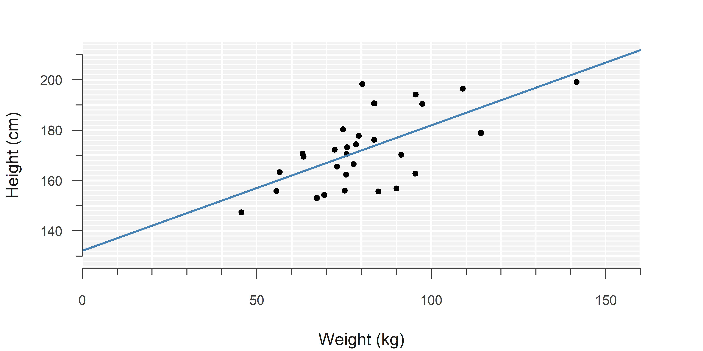
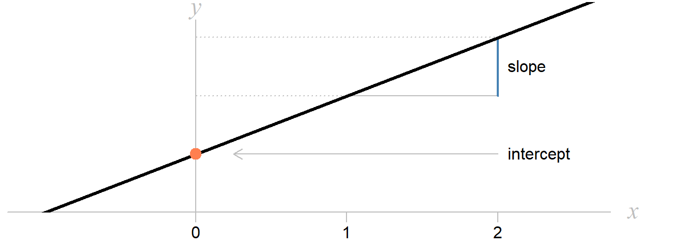
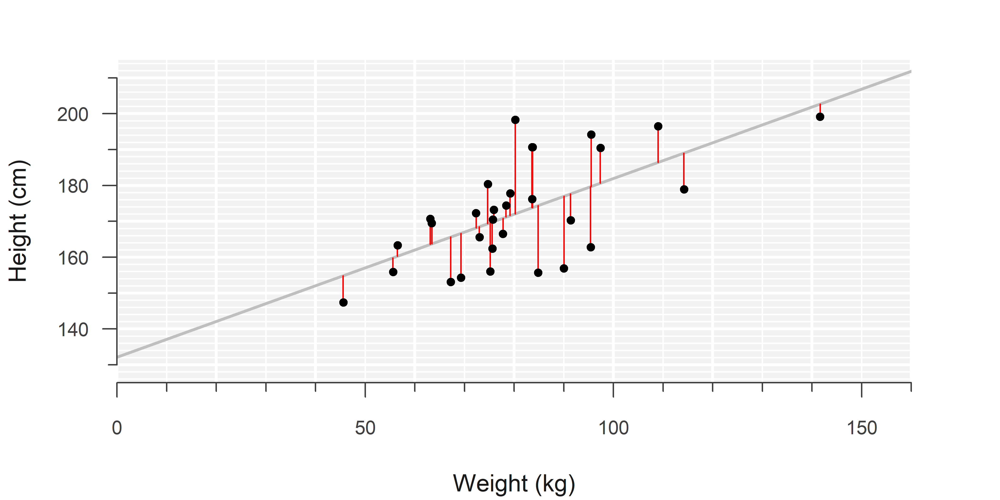
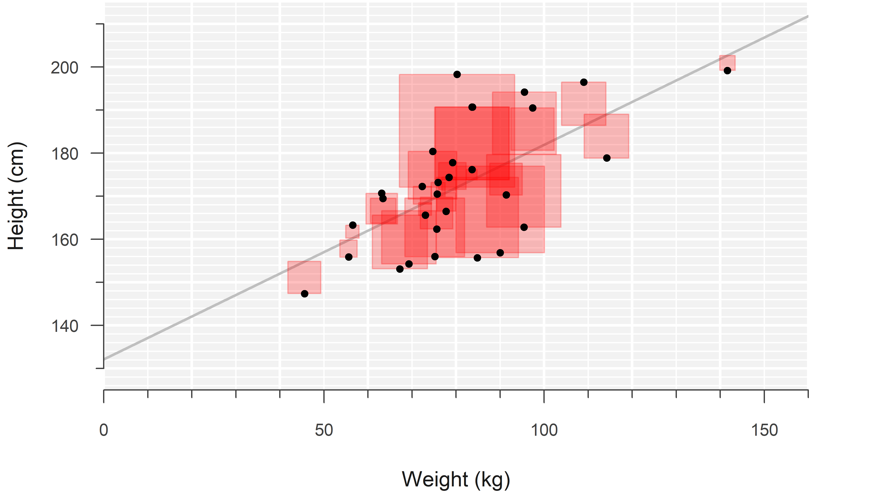
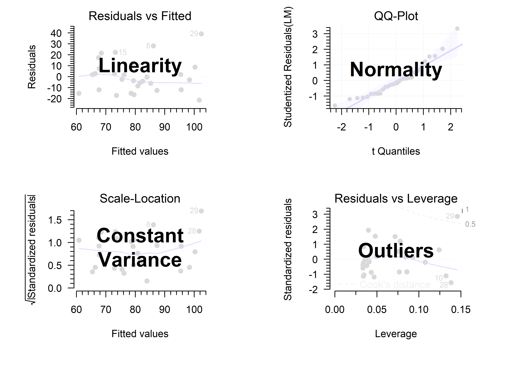
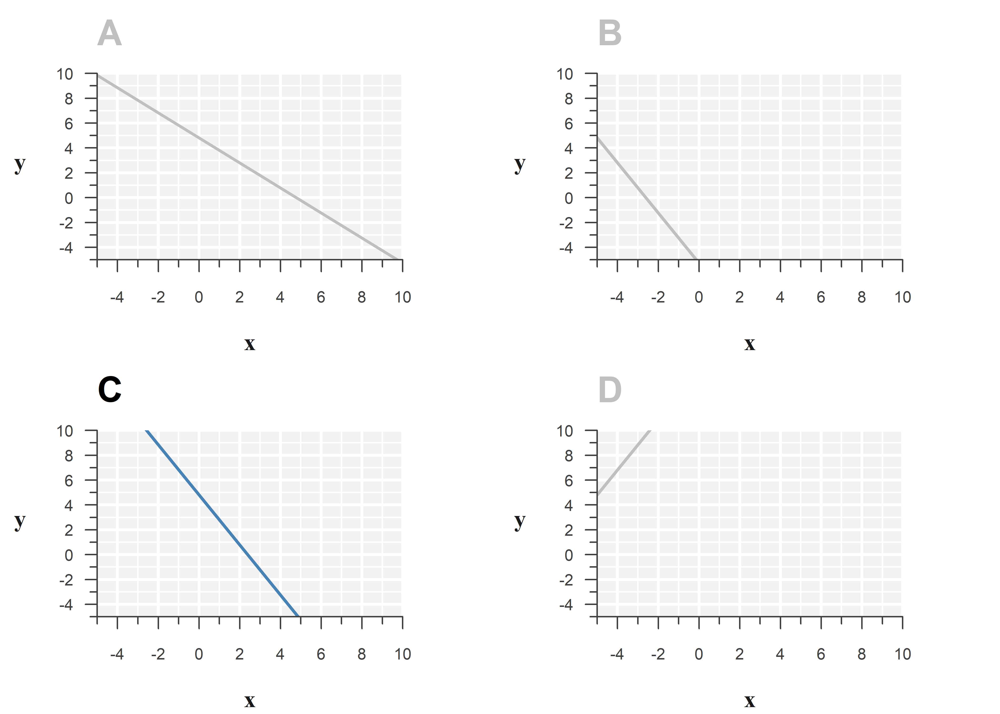
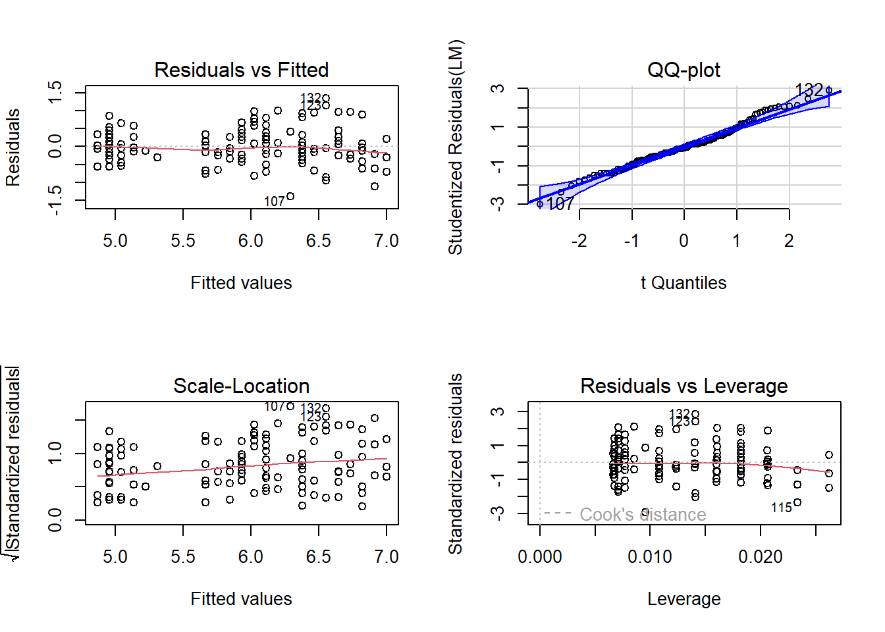
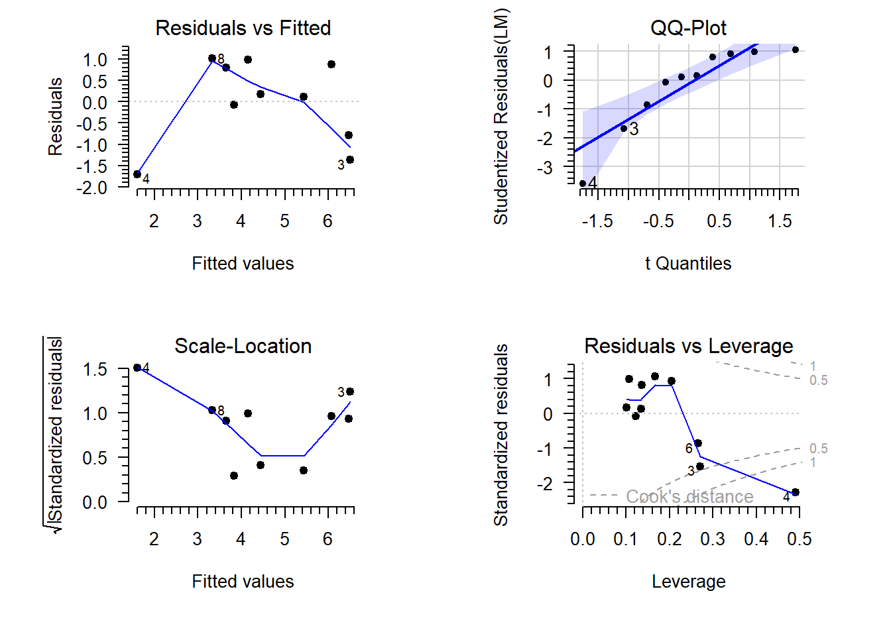

1 Simple Linear Regression
Linear regression with a single explanatory variable.
1.1 Lecture
Watch the videos on linear regression and test your knowledge through the quiz questions. Then, apply your knowledge, by performing a complete analysis. The summary is meant as reference material to answer the quiz questions, should you get stuck.
1.2 Summary
Mathematical formula:
\[\begin{align} y &= \beta_0 + \beta_1 \cdot x + \epsilon \\ \tag{1}\label{slm}\\ \epsilon &\sim \mathcal{N}(0, \, \sigma^2) \end{align}\]
Code:
model <- lm(y ~ x, data)import statsmodels.api as sm
model = sm.OLS(y, x).fit()Note: You have to include an intercept manually using x = sm.add_constant(x).
Symbols & definitions
- \(y\) — response variable
-
The outcome.
-
\(\hat{y}\) is the predicted outcome by the model, also called the ‘fitted value.’
- \(x\) — explanatory variable
-
The variable the outcome is regressed on.
- \(\beta_0\) — intercept
-
Value of the outcome (\(y\)), when the explanatory variable (\(x\)) is zero.
-
\(\beta_0\) is the theoretical value.
-
\(\hat{\beta}_0\) is its estimate.
- \(\beta_1\) — slope
-
Change in the outcome (\(y\)), when the explanatory variable (\(x\)) increases by one.
-
\(\beta_1\) is the theoretical value.
-
\(\hat{\beta}_1\) is its estimate.
- \(\epsilon\) — error
-
Difference between the true population values of the outcome and those predicted by the true model.
-
\(\epsilon\) is the true error.
-
\(\hat{\epsilon}\) is sometimes used to denote the residual, an ‘estimate’ of the error.
- \(\mathcal{N}\) — normal distribution
-
See Normal Distribution.
-
\(\epsilon \sim \mathcal{N}(0, \, \sigma^2)\) means: The error follows a normal distribution with mean \(\mu = 0\) and variance \(\sigma^2\) (some unknown variance).
Explanation
Simple linear regression models the relationship between two continuous1 variables, using an intercept and a slope:

A model is only an approximation and there will always be individual differences from the ‘average’ trend that has been estimated. These differences are called the residuals:

The intercept and slope are estimated by minimizing the sum of squared residuals, a technique called ordinary least squares.2

The results of a linear regression are summarized in a regression table, which provides insight into the parameter estimates, their uncertainty, and some basic measures of how well the model fits the data:
DF <- read.csv("data/example_data_simple_linear_regression.csv")
LM <- lm(weight ~ height, data = DF)
summary(LM)
Call:
lm(formula = weight ~ height, data = DF)
Residuals:
Min 1Q Median 3Q Max
-21.486 -11.962 -2.670 6.326 39.192
Coefficients:
Estimate Std. Error t value Pr(>|t|)
(Intercept) -57.4496 32.1694 -1.786 0.084960 .
height 0.8025 0.1859 4.318 0.000178 ***
---
Signif. codes: 0 '***' 0.001 '**' 0.01 '*' 0.05 '.' 0.1 ' ' 1
Residual standard error: 14.82 on 28 degrees of freedom
Multiple R-squared: 0.3997, Adjusted R-squared: 0.3783
F-statistic: 18.64 on 1 and 28 DF, p-value: 0.0001783import pandas as pd
import statsmodels.api as sm
DF = pd.read_csv("data/example_data_simple_linear_regression.csv")
LM = sm.OLS(DF['height'], sm.add_constant(DF['weight'])).fit()
print(LM.summary2()) Results: Ordinary least squares
=================================================================
Model: OLS Adj. R-squared: 0.378
Dependent Variable: height AIC: 234.5127
Date: 2025-07-11 13:43 BIC: 237.3151
No. Observations: 30 Log-Likelihood: -115.26
Df Model: 1 F-statistic: 18.64
Df Residuals: 28 Prob (F-statistic): 0.000178
R-squared: 0.400 Scale: 136.30
------------------------------------------------------------------
Coef. Std.Err. t P>|t| [0.025 0.975]
------------------------------------------------------------------
const 132.1493 9.5791 13.7955 0.0000 112.5273 151.7712
weight 0.4981 0.1154 4.3178 0.0002 0.2618 0.7344
-----------------------------------------------------------------
Omnibus: 0.339 Durbin-Watson: 2.521
Prob(Omnibus): 0.844 Jarque-Bera (JB): 0.508
Skew: 0.156 Prob(JB): 0.776
Kurtosis: 2.444 Condition No.: 373
=================================================================
Notes:
[1] Standard Errors assume that the covariance matrix of the
errors is correctly specified.A simple linear model makes several key assumptions which are required for valid inference:
- The observations are independent.
- The relationship between the outcome and the explanatory variable is linear.
- The error follows a normal distribution.
- The error has a constant variance along the regression line.
And while not really an assumption, also important:
- There are no influential outliers with unreasonably large influence on the estimates.
Independent measurements must be apparent from the study design. The rest can be checked through visual diagnostics. A quick visual summary of what each plot is used for:

Example
Refer to the tutorial at the end of the chapter.
1.3 Quiz
Which of the following is implicitly assumed in simple linear regression? (choose one)
A. The data are normally distributed
B. The outcome is normally distributed
C. The residuals are normally distributed
D. The response variable is normally distributed
Hint
See equation \(\eqref{slm}\).
Which of the following is implicitly assumed in simple linear regression? (choose one)
A. The data are normally distributed
B. The outcome is normally distributed
C. The residuals are normally distributed
D. The response variable is normally distributed
Learn why
The normality assumption is about the error, the vertical distances along the regression line. Our ‘estimate’ of the error is called the residual.
Simple linear regression makes no assumptions about your entire data set, nor your outcome variable. Response variable is just a synonym for outcome.
Another correct way to phrase the assumption is that the outcome is conditionally normally distributed. The condition here is the value of the explanatory variable. Namely, we can rewrite equation \(\eqref{slm}\) as follows:
\[\begin{align} y \sim \mathcal{N}(\beta_0 + \beta_1 \cdot x, \, \sigma^2) \end{align}\]
This says: “The outcome follows a normal distribution with a mean that depends on the value of \(x\).”
Don’t worry if you do not fully understand this yet, as it will be covered at length in the next chapter.
In the context of simple linear regression, a confidence interval shows:
A. Where to expect current observations
B. Where to expect future observations
C. A plausible range of values for the intercept and slope
D. A 95% confidence interval has a 95% chance to contain the true value for the intercept/slope
Hint
This is mentioned in the first video , and more thoroughly explained in a separate video:
In the context of simple linear regression, a confidence interval shows:
A. Where to expect current observations
B. Where to expect future observations
C. A plausible range of values for the intercept and slope
D. A 95% confidence interval has a 95% chance to contain the true intercept/slope
Learn why
A. You don’t need an interval for this, just look at the observations.
B. This is the interpretation of a prediction interval.
C. This is a loose interpretation of a confidence interval, I recommend using.3
D. This is the interpretation of a Bayesian credible interval.
For a more in depth explanation, please refer to the video:
Below is the output of a simple linear model:
Estimate Std. Error t value Pr(>|t|)
(Intercept) 4.817080 0.3375541 14.270542 5.668035e-07
x -2.016138 0.4487337 -4.492949 2.020849e-03Which of the following best represents the model?

Hint
Look at the Estimate column.
Below is the output of a simple linear model:
Estimate Std. Error t value Pr(>|t|)
(Intercept) 4.817080 0.3375541 14.270542 5.668035e-07
x -2.016138 0.4487337 -4.492949 2.020849e-03Option C best represents the model:

Learn why
Filling in the estimates, the fitted model is:
\[\begin{align} \hat{y} = \texttt{4.817} - \texttt{2.016} \cdot x \end{align}\]
The estimated slope is about -2, so the line should go down by 2 for every unit increase in \(x\).
The intercept is the value of the outcome, if we set the explanatory variable to zero. You may have learned before that the intercept is where you ‘cross the \(y\)-axis,’ but the figures are (intentionally) misleading to teach you an important nuance: The \(y\)-axis does not have to start at \(0\).
Below is the same figure, with a vertical line drawn at \(x=0\):

Continuing on question 3, below is another part of the output of this model:
Residual standard error: 1.051 on 8 degrees of freedom
Multiple R-squared: 0.7162, Adjusted R-squared: 0.6807
F-statistic: 20.19 on 1 and 8 DF, p-value: 0.002021Answer the following questions:
- This model explains a significant/non-significant part of the variance in the outcome.
- This model explains …% of the variance in the outcome.
- The original sample size was … and the model uses … degrees of freedom.
- The residuals have a standard deviation of ….
Hint
This is explained in the third video .
Continuing on question 3, below is another part of the output of the model:
Residual standard error: 1.051 on 8 degrees of freedom
Multiple R-squared: 0.7162, Adjusted R-squared: 0.6807
F-statistic: 20.19 on 1 and 8 DF, p-value: 0.002021Answer the following questions:
- This model explains a significant/non-significant part of the variance in the outcome.
- This model explains 71.6% of the variance in the outcome.
- The original sample size was 10 and the model uses 2 degrees of freedom.
- The residuals have a standard deviation of 1.05.
Learn why
- The \(F\)-test at the bottom compares the original spread in the outcome to the spread that remains around the regression line after fitting the model (i.e. the residual variance). Its \(p\)-value is \(0.002\), which would be considered significant at most commonly used levels of significance, like \(\alpha = 0.05\), or \(\alpha = 0.01\).
- Variance explained is the interpretation of \(R^2\).
- The residual degrees of freedom are
8according to the output. A simple linear model consists of an intercept and a slope, so the model uses 2 degrees of freedom. That means the original sample size was \(8 + 2 = 10\). - The spread around the regression line is printed with the incorrect wording
residual standard error: 1.051, as mentioned in the video. It should actually sayresidual standard deviation: 1.051.
Below are some diagnostic plots for the model fitted above. Explain what each plot is for and comment on the results:

- The residuals vs fitted plot is used to assess the assumption of …. In this case it shows ….
- The QQ-plot is used to assess the assumptions of …. In this case it shows ….
- The scale-location plot is used to assess the assumption of …. In this case it shows ….
- The residuals vs leverage plot is used to assess …. In this case it shows ….
Based on these diagnostic plots, I conclude ….
Hint
This is covered in the fourth video .
Below are some diagnostic plots for the model fitted above. Explain what each plot is for and comment on the results:

- The residuals vs fitted plot is used to assess the assumption of linearity. In this case it shows a non-linear pattern, although that can be attributed to a single observation (4).
- The QQ-plot is used to assess the assumptions of normality. In this case it shows left skew, indicated by the convex shape. However, the deviation from normality is within what is acceptable, according to the confidence band.
- The scale-location plot is used to assess the assumption of constant variance. In this case it shows no consistent upward or downward trend in the variance along the regression line.
- The residuals vs leverage plot is used to assess the presence and influence of outliers. In this case it shows a single outlying observation with high leverage (4).
Based on these diagnostic plots, I conclude observation 4 has a large influence on the parameter estimates and must be checked for validity.
Learn why
While the diagnostic plots may suggest multiple issues, they are often symptoms of a single underlying problem. As explained in the fourth video , focus on identifying the main culprit, rather than attempting to address problems individually.
When you identify an influential outlier, I recommend these steps in order:
- Look up the observation in the dataset.
- Is the value plausible? (e.g., a negative height is not possible)
- Does stand out in other ways? (e.g., also unusual in terms of location, time, etc.)
- Check any field notes, logs, or metadata. (e.g., a sample accidentally left out overnight)
- If the value is valid, but outlying:
- Consider modifying the model. (e.g., add a non-linear term or spline)
- If changing the model is not appropriate—perhaps because there is strong theoretical foundation to assume a linear relationship—consider using robust standard errors. (e.g., the
sandwichpackage in R)
- Only remove the observation if:
- It is clearly invalid. (e.g., misplaced decimal separator)
- There is strong contextual evidence that it is not representative of the rest of the data. (e.g., a single patient of advanced age)
Inexperienced analysts are often quick to filter and discard observations, impute missing values, etc., but these are dangerous actions that can severely bias statistical inference. Instead, approach these decisions with caution, or consult with an expert.
1.4 Apply your knowledge
Below you can find a worked out example (tutorial) and a dataset for you to analyze yourself (exercise):
How to read data in R
- Save the data and qmd file in the same location on your computer.
- Open the qmd file in RStudio.
- Set working directory to source file location.
(Session > Set Working Directory > To Source File Location) - R will now read from the folder the qmd file is located, so you can just use
read.csv("name-of-data.csv").
Continuous can take on any value within a range, like \(1,\, 1.01,\, 1.001,\, \dots\)
Discrete can only take on certain values, like \(1,\, 2,\, 3,\, \dots\)↩︎It is called ordinary in contrast to the many adaptation that exist, like weighted least squares, partial least squares, etc.↩︎
Purists may object to this definition, but as shown in the end of the video on confidence intervals, this interpretation is often very reasonable for the types of models you will learn about in this course.↩︎